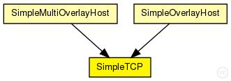
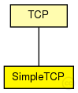

This documentation is released under the Creative Commons license
This documentation is released under the Creative Commons licenseUDP protocol implementation, for IPv4 and IPv6.
The UDP protocol header is represented by the class UDPPacket.
Communication with clients (applications)
The module can (should) be connected to several applications. For sending an UDP packet, the application should attach an UDPControlInfo object to the payload, and send it to UDP. UDP will also attach an UDPControlInfo object to any payload message in sends up to the application.
For receiving UDP packets, the connected applications should first "bind" to the given UDP port. This can be done by sending an arbitrary message with message kind UDP_C_BIND and an UDPControlInfo attached with srcPort filled in.
If there is only one app which doesn't bind to any port, it will receive all packets.
Communication with other nodes
The SimpleUDP model sends packets directly to the destination
See also: SimpleUDPPacket, UDPControlInfo, GlobalRoutingHashMap
The following diagram shows usage relationships between types. Unresolved types are missing from the diagram. Click here to see the full picture.
The following diagram shows inheritance relationships for this type. Unresolved types are missing from the diagram. Click here to see the full picture.
| TCP (simple module) |
TCP protocol implementation. This implementation supports: |
If a module type shows up more than once, that means it has been defined in more than one NED file.
| SimpleMultiOverlayHost (compound module) |
Host in the simple network that participates in the overlay |
| SimpleOverlayHost (compound module) |
Host in the simple network that participates in the overlay |
| Name | Type | Default value | Description |
|---|---|---|---|
| advertisedWindow | int | 14*this.mss |
in bytes, corresponds with the maximal receiver buffer capacity (Note: normally, NIC queues should be at least this size) |
| delayedAcksEnabled | bool | false |
delayed ACK algorithm (RFC 1122) enabled/disabled |
| nagleEnabled | bool | true |
Nagle's algorithm (RFC 896) enabled/disabled |
| limitedTransmitEnabled | bool | false |
Limited Transmit algorithm (RFC 3042) enabled/disabled (can be used for TCPReno/TCPTahoe/TCPNewReno/TCPNoCongestionControl) |
| increasedIWEnabled | bool | false |
Increased Initial Window (RFC 3390) enabled/disabled |
| sackSupport | bool | false |
Selective Acknowledgment (RFC 2018, 2883, 3517) support (header option) (SACK will be enabled for a connection if both endpoints support it) |
| windowScalingSupport | bool | false |
Window Scale (RFC 1323) support (header option) (WS will be enabled for a connection if both endpoints support it) |
| timestampSupport | bool | false |
Timestamps (RFC 1323) support (header option) (TS will be enabled for a connection if both endpoints support it) |
| mss | int | 536 |
Maximum Segment Size (RFC 793) (header option) |
| tcpAlgorithmClass | string | "TCPReno" |
TCPReno/TCPTahoe/TCPNewReno/TCPNoCongestionControl/DumbTCP |
| sendQueueClass | string | "TCPVirtualDataSendQueue" |
TCPVirtualDataSendQueue/TCPMsgBasedSendQueue |
| receiveQueueClass | string | "TCPVirtualDataRcvQueue" |
TCPVirtualDataRcvQueue/TCPMsgBasedRcvQueue |
| recordStats | bool | true |
recording of seqNum etc. into output vectors enabled/disabled |
| constantDelay | double |
constant delay between two peers |
|
| useCoordinateBasedDelay | bool |
delay should be calculated from euklidean distance between two peers |
|
| delayFaultType | string |
augment coordinate based delays with a realistic error, according to "Network Coordinates in the Wild", Figure 7 possible values: empty, "live_all", "live_planetlab", "simulation" |
|
| jitter | double |
average amount of jitter in % |
| Name | Value | Description |
|---|---|---|
| display | i=block/wheelbarrow | |
| class | SimpleTCP |
| Name | Direction | Size | Description |
|---|---|---|---|
| appIn [ ] | input | ||
| ipIn | input | ||
| ipv6In | input | ||
| appOut [ ] | output | ||
| ipOut | output | ||
| ipv6Out | output |
// // UDP protocol implementation, for IPv4 and IPv6. // // The \UDP protocol header is represented by the class UDPPacket. // // <b>Communication with clients (applications)</b> // // The module can (should) be connected to several applications. // For sending an \UDP packet, the application should attach an UDPControlInfo // object to the payload, and send it to UDP. // UDP will also attach an UDPControlInfo object to any payload // message in sends up to the application. // // For receiving \UDP packets, the connected applications should first // "bind" to the given \UDP port. This can be done by sending an // arbitrary message with message kind UDP_C_BIND and an UDPControlInfo // attached with srcPort filled in. // // If there is only one app which doesn't bind to any port, it will // receive all packets. // // <b>Communication with other nodes</b> // // The SimpleUDP model sends packets directly to the destination // // @see SimpleUDPPacket, UDPControlInfo, GlobalRoutingHashMap // simple SimpleTCP extends TCP { parameters: @class(SimpleTCP); double constantDelay @unit(s); // constant delay between two peers bool useCoordinateBasedDelay; // delay should be calculated from // euklidean distance between two peers string delayFaultType; // augment coordinate based delays with a realistic error, // according to "Network Coordinates in the Wild", Figure 7 // possible values: empty, "live_all", "live_planetlab", "simulation" double jitter; // average amount of jitter in % @display("i=block/wheelbarrow"); gates: }
This documentation is released under the Creative Commons license